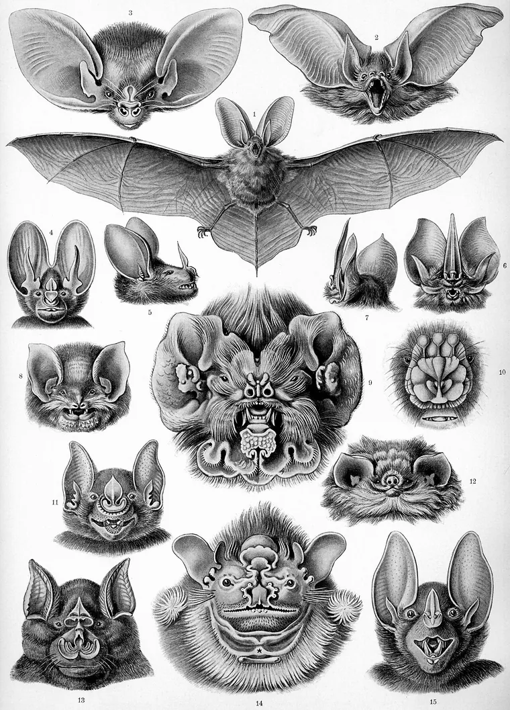

Sessão 04 / Perspetiva e os limites do que sabemos
Ver de outro lugar
Imaginar a experiência de outro é o mesmo que a conhecer?
Começar
Recupera
De memória, sem abrir o caderno.
De memória
Que três verbos tem o artigo 19.º?
Confirmar
Procurar, receber e difundir.
Que três direitos dá o Regulamento dos Serviços Digitais quando há moderação?
Confirmar
Denunciar, receber uma explicação e recorrer.
Que regra da casa foi mais difícil de escrever?
Vê
Observa primeiro. Lê depois.
Material 1 de 3: Os morcegos de Haeckel
Observa. O que sabes do morcego só por o ver? O que é que nenhum desenho consegue mostrar?

O naturalista Ernst Haeckel desenhou estas cabeças de morcegos com todo o pormenor. A gravura mostra tudo o que se vê de fora.
Material 2 de 3: Thomas Nagel, numa síntese
Separa o que sabemos do que imaginamos.
Material 3 de 3: Dois diários de sete dias
O que sabes de quem escreveu cada um? O que não sabes?
Exemplo escrito para esta sessão. Nenhum diário real é trocado.
Obras e materiais
Decide
Primeiro em silêncio, cada pessoa. Depois em grupo.
Sem ecrã
Primeiro, em silêncio
Saber tudo sobre o sonar diz-te como é ouvir pelo eco? Sim, em parte ou não. Guarda uma razão.
Três minutos. Escreve a escolha e uma razão no cartão de decisão. Depois, uma volta: cada pessoa lê o seu cartão, sem comentários.
Depois, em grupo
- Sobre quem vai ver o Contra-feed, separem «o que sabemos», «o que imaginamos» e «o que precisaríamos de perguntar».
- Uma plataforma que acerta no que te prende conhece-te?
- Como se representa a experiência de alguém sem a inventar?
No fim, registem a decisão e uma razão que ficou vencida.
Comparar razões
Conhecer o funcionamento não é viver a experiência: falta o ponto de vista de quem a vive. Isto não torna inútil a investigação: mostra um limite do que podemos afirmar. Um perfil reúne o que alguém fez, não como foi para essa pessoa.
Faz
Em papel ou no ficheiro do grupo.
Em papel
- Escrevam a pergunta da peça, a resposta provisória com a razão e uma objeção. O exemplo do Contra-feed serve de modelo.
- Imaginem três públicos possíveis, sem pessoas identificadas: alguém que não usa redes, um familiar mais velho, um aluno mais novo. Como chega cada um à peça, e o que precisa para a perceber?
- Escrevam três perguntas abertas para o público de teste.
Rever com outra pessoa
Se a outra pessoa conseguir responder a uma pergunta só com «sim» ou «não», essa pergunta reescreve-se.
Quem revê marca uma coisa que se percebe e uma que falta, e faz uma pergunta.
GuardarCasa 4 do mapa do Contra-feed: A pergunta e o público
A pergunta, a resposta provisória e a razão, uma objeção; três públicos; três perguntas abertas.
- 1A regra
- 2O sinal e o custo
- 3As regras da casa
- 4A pergunta e o público
- 5Os meios e os créditos
- 6O caso
- 7Conceito e guião v1
- 8Ensaio e guião v2
- 9Defesa e manifesto
- 10O que o público viu
Leva
Em papel, antes de sair.
Em papel
Em papel, antes de sair
Numa frase: o que sobre o teu público só vais saber se lhe perguntares?
Confirma
- Separas saber de imaginar.
- A pergunta é aberta.
- Não falas por outra pessoa.
O registo fica neste aparelho.